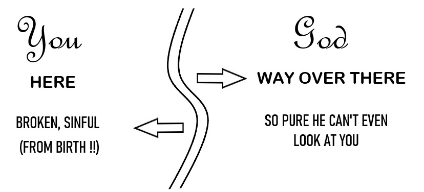
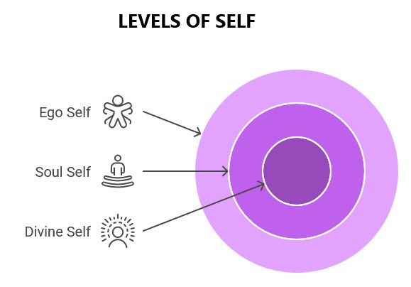
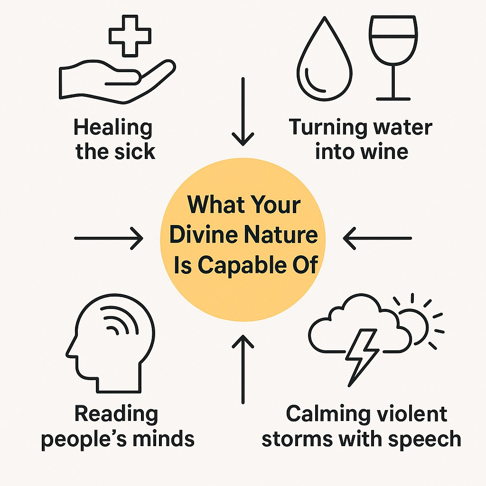

"You are gods, children of the Most High, all of you." — Psalm 82:6, quoted by Jesus in John 10:34
Hold up. Before we go any further, I need to ask you something that might rock your entire world: What if everything you've been told about who you are is a complete fabrication? A beautifully orchestrated deception designed to keep you trapped in a cage you don't even realize exists?
Think about it. From the moment you were old enough to understand language, you've been fed the same story: You're broken. You're flawed. You're unworthy. You're separate from the divine. Even the institutions that claim to offer you salvation can't resist constantly reminding you of your fundamental inadequacy—your 'sin nature,' your spiritual poverty, your eternal distance from God.
But what if I told you that Jesus NEVER taught any of that nonsense? What if I showed you that he taught something so radically different—so explosively liberating—that the powers-that-be had to murder him to shut him up?
Picture this: You're in a packed courtroom. The religious elite are foaming at the mouth, desperate to find any excuse to eliminate this troublemaker once and for all. The tension is palpable. And then Jesus drops the bomb—he looks these self-righteous gatekeepers straight in the eye and quotes Psalm 82:6: "YOU ARE GODS."
Let that sink in for a moment. He didn't say, "I'm God, and you're pathetic." He didn't say, "Bow down to my superiority." No—he looked at ordinary people and declared: YOU ARE GODS.
This wasn't some flowery metaphor or poetic license. This was a nuclear-level truth bomb—so dangerous, so revolutionary, that those religious authorities immediately reached for stones to execute him on the spot. And here's the surprising part (or perhaps it's unsurprising): most churches today STILL try to explain this away or water it down into something that won't threaten their control over you.
Why? Because if you really grasped what Jesus was saying, the entire power structure would collapse like a house of cards.
Now, here's where things get really interesting. When Jesus dropped that "Father and I are one" statement, the church has spent the last two thousand years spinning it as proof that he was some unique, unrepeatable divine being. But that's NOT what he meant—and the proof is right there in his own words.
Listen to this gem he shared with his closest followers: "On that day you will realize that I am in my Father, and YOU ARE IN ME, AND I AM IN YOU" (John 14:20). Did you catch that last part? YOU ARE IN ME, AND I AM IN YOU.
This isn't some cosmic hierarchy with God floating above, Jesus in the middle, and us pathetic humans crawling around in the dirt. He was revealing something infinitely more beautiful—a state of consciousness where every single one of us can experience that same divine oneness. He wasn't claiming to be special; he was showing us how to recognize what we already are beneath all the layers of separation and limitation.
Here's what makes this so revolutionary: While most religions keep you obsessing over the gap between your miserable, sinful self and some distant, unreachable God, Jesus was pointing in the completely opposite direction. "The kingdom of God is WITHIN YOU," he declared. Not floating in the clouds. Not hiding in some exclusive temple. Not locked away for the spiritually elite. WITHIN YOU.
And here's where it gets absolutely mind-blowing: Every single discovery we've made in the previous chapters confirms this truth. Those near-death experiences? They prove consciousness exists beyond your physical body. The reincarnation research? It reveals a soul that keeps evolving through multiple lifetimes. Quantum physics? It demonstrates that consciousness literally shapes reality at the most fundamental level.
All the evidence converges on one earth-shattering conclusion: What you truly are exists far beyond your physical body and personality. You're not just some flesh-and-blood accident stumbling through life. You're a multidimensional being of pure consciousness—temporarily focused in physical form, sure, but absolutely not confined to it.
Now, let's talk about those "miracles" that have everyone scratching their heads. Healing the terminally ill. Turning water into premium wine. Silencing raging storms with a single command. Reading minds before people even spoke. Here's the game-changing truth: Those weren't supernatural miracles at all.
They were natural expressions of what becomes possible when you stop operating from your limited ego and start accessing your divine nature. Jesus wasn't showing off some exclusive superpower that only he possessed—he was demonstrating what's available to EVERY SINGLE ONE OF US when we awaken to who we really are.
Read that again. GREATER THINGS THAN THESE. He didn't say, "Sit back and admire me because I'm special and you're not." He didn't say, "Worship me because only I can pull off these tricks." No—he looked his followers in the eye and declared: YOU WILL DO GREATER THINGS.
This wasn't some feel-good motivational speech or empty religious promise. This was a practical, verifiable statement based on his intimate understanding of human potential. When you wake up to your true nature beyond the limited ego, you access capabilities that seem like impossible miracles from the narrow perspective of ordinary consciousness.
But wait—if this is really our true nature, why aren't we all walking around healing people and manifesting wine at dinner parties? Why do most of us feel so limited, disconnected, trapped in these physical bodies, just barely surviving each day? If we're genuinely divine beings, where's the proof in our daily experience?
Jesus tackled this question directly. He understood exactly why we don't experience our divine nature—and more importantly, he provided a roadmap for removing the veils that obscure it (some of the statements on the left are not direct quotes of Jesus, but I'm including them here because they give us clues):
Look at those teachings again. Not one of them is about following religious rules, performing empty rituals, or believing the "correct" doctrines. They're all about STRIPPING AWAY THE VEILS THAT HIDE WHO YOU REALLY ARE.
Jesus wasn't teaching you how to become something you're not. He was showing you how to remember what you already are beneath all the conditioning, beneath the false identity you've constructed over years of being told you're small, powerless, and fundamentally flawed.
This completely revolutionizes how we understand Jesus' role. He's not your savior in the traditional sense—he's your wayshower (showing you the way.) He's not some uniquely divine being who had to die to rescue you from your inherent inadequacy. He's someone who lived and demonstrated the divine nature available to every single one of us—and then got executed for threatening the religious and political power structures with this explosive truth.
He didn't come to save you from your sins. He came to save you from your IGNORANCE of your true nature.
Here's a detail most people miss: When Jesus taught the Lord's Prayer, he didn't say "My Father." He said "Our Father." Think about that. He was pointing to the divine source that we all share—the consciousness from which we all emerge. His relationship with the Father wasn't something exclusive to him. It was exemplary—a living demonstration of what becomes possible when you recognize your own divine connection.
And suddenly, all those paradoxes in Christian theology? They dissolve like mist in sunlight. Being "born again" isn't just about joining a religion—it's an awakening to your higher nature. Salvation isn't rescue from divine punishment—it's liberation from the illusion of separation. Eternal life isn't just continued existence after your body dies—it's the recognition of your timeless nature that exists beyond birth and death.
If you're truly an expression of divine consciousness temporarily focused in human form—not separate from God but an individualized center of God-consciousness—then here's what changes:
Now, before you start strutting around thinking you're superior to everyone else, let me stop you right there. This recognition of your divine nature doesn't lead to spiritual arrogance or ego inflation—it does the exact opposite.
Here's the beautiful paradox: when you truly recognize your divine nature, you simultaneously recognize it in every single being. The homeless person on the corner. Your irritating coworker. Your political opponents. Everyone.
Genuine self-knowledge dissolves separation rather than reinforcing it. The ego that would boast "I'm special and you're not"? That's precisely what must be transcended to experience your higher nature. It's the ultimate spiritual paradox.
Jesus demonstrated this paradox perfectly. Here's a man who just declared his oneness with the Father—and what does he do immediately afterward? He gets down on his hands and knees and washes his disciples' dirty, dusty feet. That's what authentic recognition of your divine nature looks like. Not superiority. Not dominance. Humble service.
Because when you see the divine in yourself, you see it everywhere.
So there you have it: you're NOT the limited, powerless, separate being you've been conditioned to believe you are. You're a multidimensional expression of divine consciousness with capabilities that would make your current self blow a fuse.
But here's the thing—knowing this intellectually is just the beginning. In the next chapter, we're going to get hands-on practical. We'll explore exactly how to access this higher consciousness—specific, actionable methods that align perfectly with Jesus' teachings and allow you to experience directly what he was pointing to when he declared, "You are gods."
Because it's one thing to read about your divine nature. It's something else entirely to LIVE IT, BREATHE IT, AND EXPERIENCE IT as your everyday reality.
Are you ready to step into who you really are?